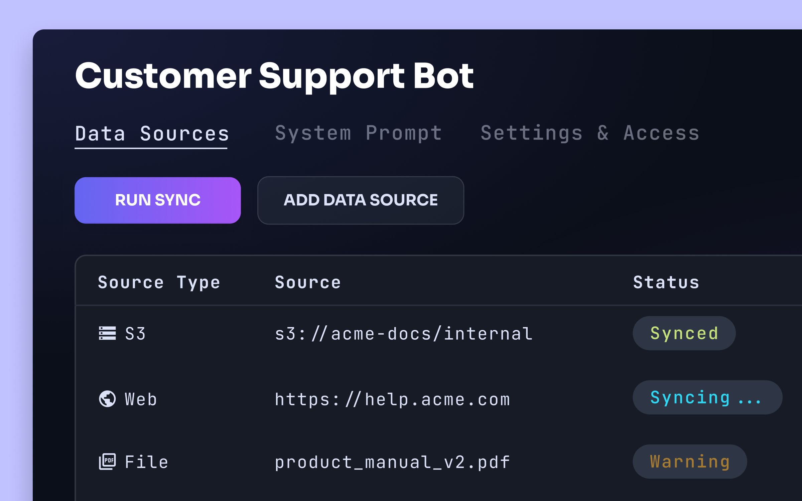
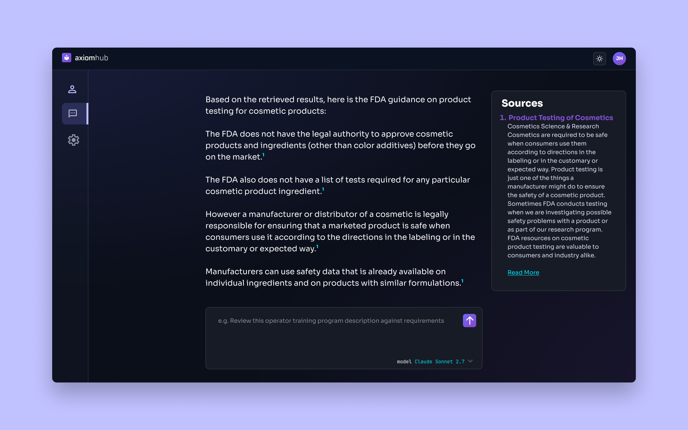
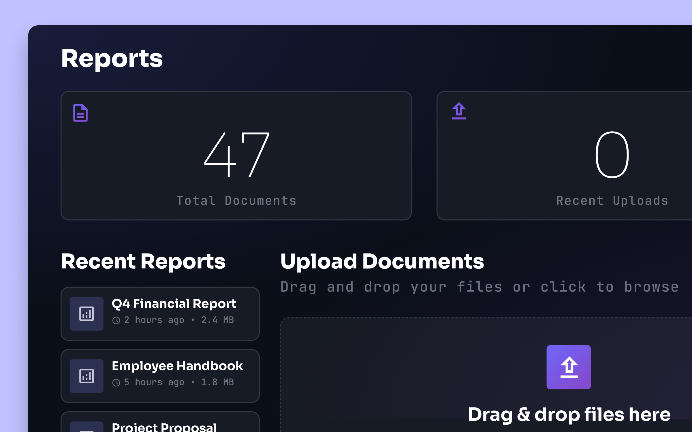
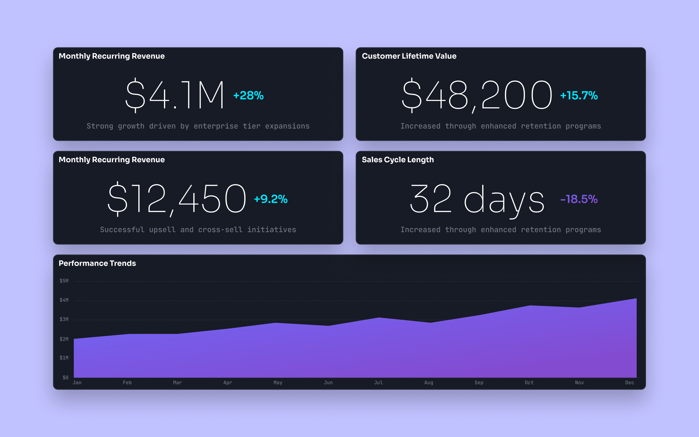
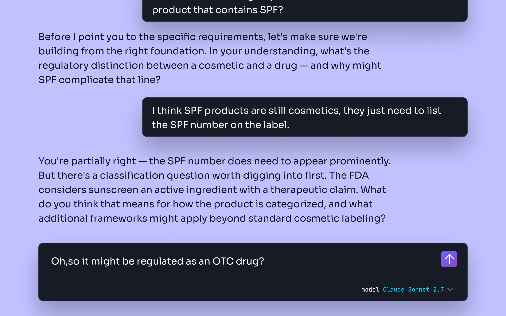
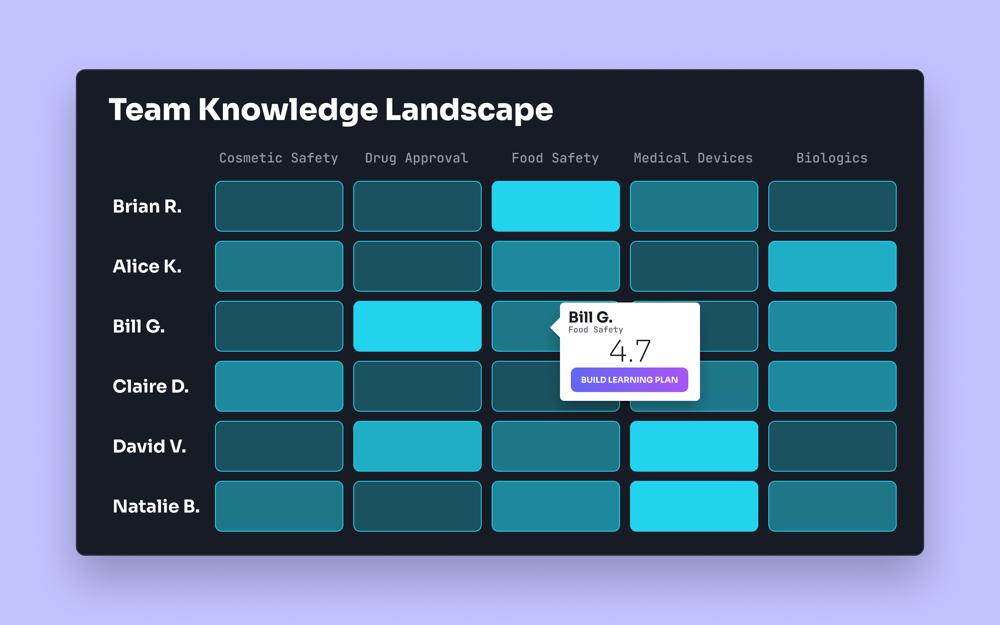
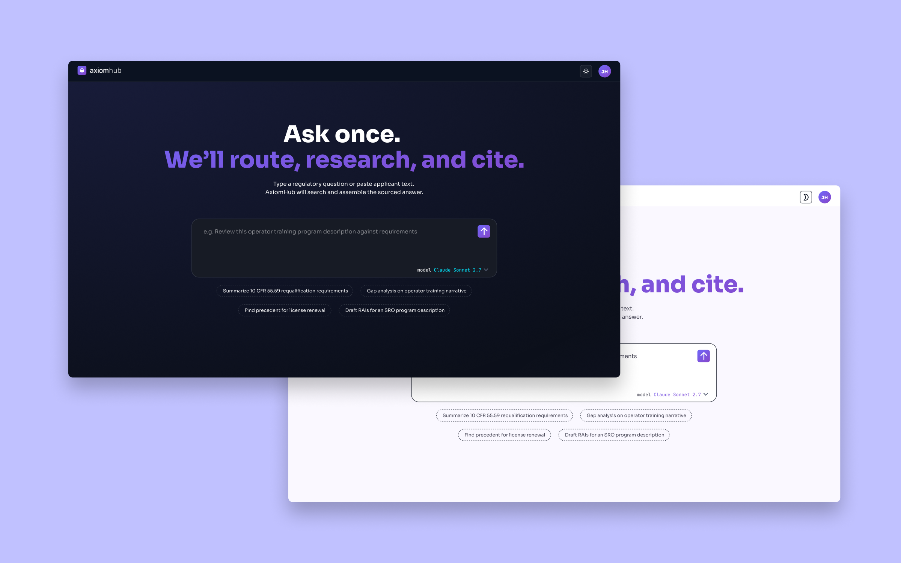
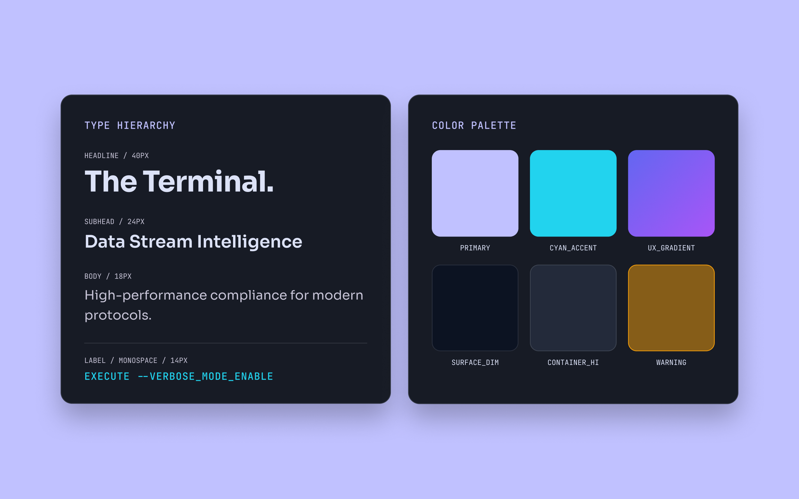

AxiomHub
Employees at the FDA were becoming overwhelmed by requests for how to move through the registration process for cosmetics. There weren't enough employees to field the growing number of requests, and as new employees came in, they didn't have the institutional knowledge to quickly and efficiently answer questions. When we looked deeper, we found that this problem existed throughout and beyond the agency.
Key Contributions
- Lead Designer
- Product Owner
- Front-End Dev Support
Knowledge, On Demand
When you don't have the luxury of time and expertise, you need solutions to bridge that gap. We turned to a chat-based AI assistant with a RAG architecture, an experience where employees and the general public could interact in natural language with a system that had complete knowledge of every guideline and regulation. Humans have a deep ability to make abstract connections between domains that current technology can't replicate. What we needed was a way to cut out the slow process of manual search so people could focus on the higher-level thought work they were so good at.

Built For Trust
The knowledge base was coupled with a detailed system prompt that shaped the experience for users. Access controls ensured the right people only ever saw the data they were cleared for. We wanted the experience to feel immediately familiar, so we studied how people interact with Claude, ChatGPT, and Gemini. Then we went further, rather than linking to sources, we built an always-open source panel showing the exact snippets used to generate each answer, with the document and page number cited, so users never had to wonder where the information came from.

The Feature Our Users Built For Us
After launch, we watched. Users were summarizing data, cross-referencing the knowledge base, then copying content into reports for their superiors. So we built the tool they were already improvising; report templates that let users upload their own data, structure their output, and generate formatted reports. Connected to live databases, those reports update automatically. In a world where decisions happen in the moment, the data behind them should too.


The Smartest Thing We Built Was Restraint
A member of our research team asked a harder question: could we build a system that actively worked against knowledge atrophy? Instead of giving answers, could it guide users toward them through Socratic inquiry? The system tracks each user's domain knowledge, adjusts as they grow, and knows when someone needs an answer rather than a lesson. At the team level, managers can build learning plans around individual gaps. At the organizational level, a department head can see the entire knowledge landscape at once, and the answer to visualizing it was the simplest one: a heatmap.


Designed To Be Trusted
The entire experience had to feel authoritative. We defaulted to dark mode with an optional light mode, and chose a combination of Sora and JetBrains Mono, Sora for personality, JetBrains Mono for the technical credibility that anyone who's written code will recognize immediately. Purple as the primary color grounded the experience in its connection to power and introspection.


Not a replacement. An Amplifier.
What started as a simple chatbot to help an understaffed, undertrained workforce became a platform that empowered people to grow, and empowered organizations to develop their employees into subject matter experts. AxiomHub uses the power of Artificial Intelligence, not to replace humans, but to make the humans in your organization irreplaceable.